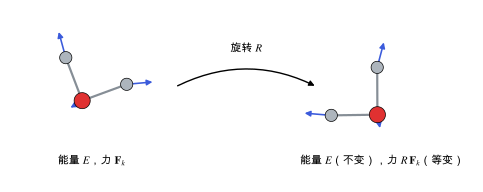

对称性与等变性
旋转、平移和置换下的不变性与等变性：为什么原子体系的模型要把对称性写进结构里。
直观阅读需要
- 旋转矩阵
- 张量与坐标变换：向量和张量在旋转下怎样变换
完整推导还需要
- 群与群表示
- 球谐函数与角动量耦合
只是提示，不需要先读完才能往下看。
直觉直观解释
把一个分子整体转一个角度，它的能量不变，但每个原子上的力也跟着转了同样的角度。前者叫不变 (invariant)，后者叫等变 (equivariant)：输入怎么变，输出就按确定的规则跟着变。
原子体系的物理量有三类对称性：
- 平移：整体平移不改变任何物理量。
- 旋转与反演（合起来是 O(3)，加上平移是 E(3)）：标量不变，向量、张量按各自的规则变换。
- 置换：交换两个同种原子，能量不变。
模型可以通过数据增强“学会”这些对称性，但只能近似满足。更好的办法是把对称性写进模型结构，让它精确满足。这样模型不用浪费数据去学对称性，数据效率更高 [Batzner et al. 2022]。

| 符号 | 是什么 | 图里对应 |
|---|---|---|
| R | 旋转矩阵 | 中间的弯箭头 |
| E | 总能，标量 | 左右两侧相同 |
| \mathbf{F}_k | 原子 k 上的力，向量 | 蓝色箭头 |
| R\,\mathbf{F}_k | 旋转后的力 | 右图蓝色箭头 |
定义与公式数学与推导
对原子坐标 \{\mathbf{r}_k\} 做旋转 R 和平移 \mathbf{t}：
其中 R 是 3×3 正交矩阵，\mathbf{t} 是平移向量。
证明思路：对 E(\{R\mathbf{r}_k + \mathbf{t}\}) = E(\{\mathbf{r}_k\}) 两边对 \mathbf{r}_k 求导，用链式法则得到 R^{\mathsf{T}}\,\partial E/\partial \mathbf{r}'_k = \partial E/\partial \mathbf{r}_k，再左乘 R。所以只要能量模型是不变的，力就“免费”等变。
不可约表示与球谐函数
旋转群的表示可以分解成不可约表示，用整数 l = 0, 1, 2, \dots 标记，维数是 2l+1：
- l=0：标量（能量）；
- l=1：向量（力、偶极矩）；
- l=2：对称无迹的二阶张量。
球谐函数 Y_l^m(\hat{\mathbf{r}}) 正好按第 l 个不可约表示变换。等变神经网络的特征就是一组按 l 分类的量 h_{l m}，旋转时它们按 Wigner 矩阵 D^{(l)}(R) 混合 [Batzner et al. 2022]。
宇称
O(3) 还包括反演 \mathbf{r} \to -\mathbf{r}。力是极向量，反演时变号；压电张量 d_{ijk} 是三阶极张量，在有反演中心的晶体中必须为零（见 晶体对称性与空间群 与 压电张量）。要预测这类量，模型必须正确区分宇称为奇和偶的特征。
在本研究线里的样子对应与边界
- MLIP：能量是不变量，力和应力由求导得到，所以等变性在这一层自动满足。等变的中间特征（l \ge 1）的作用是让模型更准确地描述角度依赖的多体相互作用（见 MACE 与等变消息传递）。
- 预测张量性质：如果想让模型直接输出 Born 有效电荷或介电张量，输出本身就要是等变的二阶张量（见 机器学习势中的长程静电与电场响应）。
- 晶体生成模型：生成的结构在旋转、平移和原子编号下应该等价，晶胞还要满足周期性；这些对称性也要写进生成模型（见 晶体结构生成模型）。
常见坑对应与边界
- 不变描述符丢失手性：只用距离和角度的描述符可能无法区分镜像对映体；对手性分子晶体要注意。
- 以为等变就等于晶体对称：等变性针对的是整个空间的旋转，与晶体自身的点群对称性是两回事；后者决定的是张量的哪些分量为零。
- 数据增强代替等变：随机旋转训练数据只能近似满足对称性，预测的张量可能有轻微的不对称噪声。
检验自己对应与边界
参考资料
论文Batzner et al. 2022
尚未实际查阅，目前只是拟查阅书目
论文Batatia et al. 2022 (设计空间)
尚未实际查阅，目前只是拟查阅书目
论文Bartók et al. 2013
尚未实际查阅，目前只是拟查阅书目
分类机器学习 · 概念 · 研究线：晶体结构生成、机器学习势 · 状态：草稿